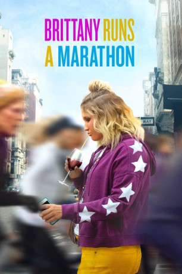
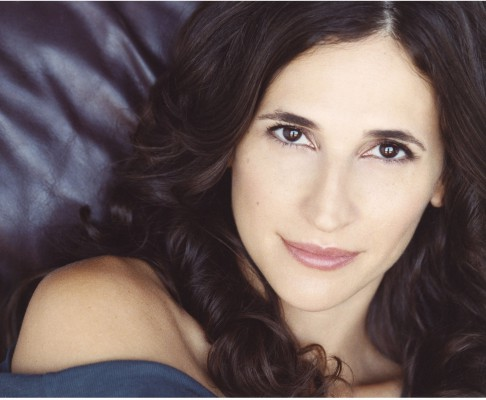
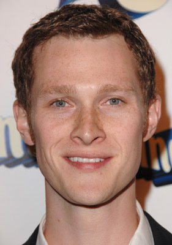
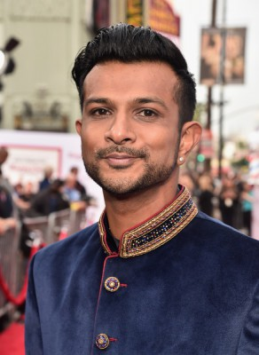

#12100 Brittany Runs A Marathon
Alternativ: Brittany Runs a Marathon (Englischer Titel)
 
 IMDB-Wertung: 6.8 / 10
IMDB-Wertung: 6.8 / 10  Tomatometer: 89
Tomatometer: 89  Metascore: 72
Metascore: 72 
Brittany ist eine ziellose New Yorker Mittzwanzigerin, die in ihrem Job nicht glücklich ist, das Nachtleben in schlaflosen Nächten exsessiv an sich vorbeirauschen lässt, trinkt und futtert und kaum mehr Selbstbewusstsein hat, da sie sich nach einem höheren Sinn für ihr Leben sehnt. Auch ihre Gesundheit lässt dementsprechend zu wünschen übrig und ihr Arzt rät ihr dringend abzunehmen. Ihre Nachbarin Catherine überredet Brittany, doch ihrer Laufgruppe beizutreten. Eine Lebensänderung sei immer möglich. Zuerst ist sie skeptisch, doch dann trifft sie dort Seth freundet sich mit ihm an und beide motivieren sich gegenseitig, weiter zu machen. Brittany gewinnt Selbstvertrauen, holt sich einen neuen Job und setzt sich ein ehrgeiziges Ziel: Sie will den Marathon laufen, um es sich selbst und der Welt da draußen endlich zu beweisen.
Jahr: 2019
Dauer: 103 Minuten
FSK: 6
Land: USA Studio: Amazon Prime VideoTonspuren: - , - , - , - , - ,
Untertitel: Englisch,
Auflösung: 1080p (1920x800) Größe: 7475 MB
Genre: Drama, Komödie
Regisseur: Paul Downs Colaizzo
Drehbuch: Paul Downs Colaizzo
Soundtrack: Duncan Thum
Darsteller:
- Jillian Bell als Brittany
- Jennifer Dundas als Shannon
- Patch Darragh als Doctor Falloway
- Alice Lee als Gretchen
- Erica Hernandez als Molly
- Max Pava als Drunk Guy
-  Michaela Watkins als Catherine
-  Dan Bittner als Terrence
- Mikey Day als Dev
- Lil Rel Howery als Demetrius
- Kate Arrington als Cici
- Beth Malone als Tesla
- Micah Stock als Seth
- Esteban Benito als Peter
- Nadia Quinn als Dana
-  Utkarsh Ambudkar als Jern
- Juri Henley-Cohn als David
- Peter Vack als Ryan
 Pascal Yen-Pfister als Snobby Artist Man
Pascal Yen-Pfister als Snobby Artist Man- Miriam A. Hyman als Snobby Artist Woman
- Gene Gabriel als Michael
- Gina Costigan als Drunk Woman
- Sarah Bolt als Jasmine
- Ian Unterman als Matty
- Robert Garcia Cabrera als Waiter
- Frances Eve als Marathon Worker
- Adam Sietz als Glenn
- Maia Nkenge Wilson als Overweight Woman
- Cooper Carrell als Forges (uncredited)
Datei: X:\2019(A-F)\Brittany Runs A Marathon (2019, FSK6, 1920x800).mkv seit 05.12.2019
Festplatte: HD 2018(G-Z)-2019(A-Z)
 Es gibt insgesamt 60 Filme in der Gruppe '2019(A-F)'
Es gibt insgesamt 60 Filme in der Gruppe '2019(A-F)'